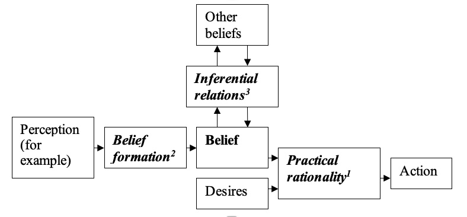

People with the Capgras1 delusion maintain that someone who is close to them has been replaced by an impostor. Subjects with the Frégoli2 delusion maintain that people they know are disguising themselves as strangers, and are following them around. People with the neurological condition of unilateral neglect3 may disown part of their body, typically their left arm or leg. Subjects with reduplicative paramnesia4 may maintain that places or people have been duplicated. One woman maintained both that her husband died long ago, and that he was a current patient on the ward. Another woman spoke of a duplicate hospital in a duplicate location. People with mirrored self misidentification5 maintain that their mirrored image is another person who follows them around by appearing in every mirror they look in to. These are all thought to be different types of delusions of misidentification.
Some subjects have delusions of thought insertion6 when they maintain that someone else’s thoughts are being inserted into their mind. People with delusions of alien control7 maintain that someone else is initiating or controlling their actions. People with the Cotard8 delusion maintain that they are dead. People who have delusions of thought broadcast9 say that their thoughts are being broadcast so that other people can hear them, and people with thought withdrawal10 maintain that thoughts are being taken from their mind. Some people with delusions of grandeur11 maintain that they are God, or some other important figure. Subjects with delusions of persecution / paranoia12 maintain that they are being targeted by another person or group of people like the FBI. People with delusions of jealousy may maintain that their partner is cheating on them, and subjects with delusions of erotomania maintain that some important figure is in love with them. People with somatic delusions have delusions about their own body, such as saying that they don’t have any internal organs. Delusions of reference occur when the subject says that some event or thing took on special significance or meaning to them. One person saw some marble tables and said he came to believe that the world was coming to an end. These kinds of delusions and some typical examples of the utterances that characterize them are summarized in Table 1.
| Delusion Name | Characteristic Delusional Utterance |
|---|---|
| Capgras1 | 'My wife has been replaced by an imposter' |
| Frégoli2 | 'People that I know are disguising themselves and are following me around' |
| Unilateral Neglect3 | 'That's not my arm -- it's yours!' |
| Reduplicative paramnesia4 | 'My husband died long ago -- but he's also a patient on this ward' |
| Mirrored Self Mis-identification5 | 'There's a person in the mirror who follows me around' |
| Thought Insertion6 | 'Someone else's thoughts are being inserted into my mind' |
| Alien Control7 | 'Someone else is initiating my actions' |
| Cotard8 | 'I am dead' |
| Thought Broadcast9 | 'Other people can hear my thoughts' |
| Thought Withdrawal10 | 'Someone is taking thoughts from my mind' |
| Grandeur11 | 'I am God' |
| Persecution / Paranoia12 | 'The FBI are out to get me' |
Delusions are to be found across at least 75 different endocrine, neurological, and psychiatric conditions (Garety and Hemsley, 1994 p.10). The clinicians handbook the Diagnostic and Statistical Manual of Mental Disorders defines delusion as
[A] False1 belief2 based on incorrect3 inference4 about external reality5 that is firmly sustained6 despite what almost everyone else believes7 and despite what constitutes incontrovertible and obvious proof or evidence to the contrary8. The belief is not one ordinarily accepted by other members of the person’s culture or subculture9... (American Psychiatric Association, (2000) pp. 821-822).
This definition has generated controversy on each substantial claim that it makes. It has been questioned whether delusions must be false, beliefs, inferences, incorrect inferences, and so forth. It may well be plausible that our concept of delusion is a cluster concept and as such will resist our attempts to capture the necessary and jointly sufficient conditions of the phenomena. Even if this is so, and even if the APA definition is construed as an attempt at a cluster concept analysis rather than as a list of necessary and jointly sufficient conditions, it is still widely accepted that it needs work and there is ongoing research on improving the definition. Some of the controversy is summarized in Table 2.
| False1 | Not all delusions are false e.g., someone may have constantly accused their partner of infidelity over a number of years which may result in their partner being unfaithful. |
| Beliefs2 | Campbell (2001) says delusions can't be beliefs because beliefs are required to be contentful states - but delusions can't be assigned a consistent content. Gregory Currie (2000) maintains that delusions are states of imagining that are misidentified by the delusional subject as states of belief. Berrios (1991) considered delusions to be empty speech acts. |
| Incorrect3 | Brendan Maher (1999; 2003) does not consider them to be 'incorrect' in the sense of being irrational, or deviant from the inferences of non-delusional subjects. |
| Inferences4 | Davies et al., (2001) and Davies and Coltheart (2000) maintain that the delusional error may be in simply accepting a faulty perceptual experience to be veridical. This does not seem to involve an obvious step of inference. |
| Regarding external reality5 | Delusions may concern the subject's own thought processes as in thought insertion and thought broadcast. |
| Firmly sustained6 | There is evidence that degree of conviction may vary over time (see Walkup, 1995 p. 324). |
| The beliefs of others7 | It would seem plausible to consider that a subculture may exhibit a group or mass delusion as in the case of some bizarre cults. It may also be that an adequate definition of delusion should specify intrinsic rather than relational properties of the phenomenon. |
| Evidence to the contrary8 | It is far from clear that delusional subjects are routinely presented with 'incontrovertible and obvious proof or evidence to the contrary' before diagnosis, or that they gain access to this kind of evidence during their recovery (see Walkup, 1995). It may be that delusions are typically the sorts of things that it is hard to find supporting or disconfirming evidence for (such as spiritual or religious beliefs; beliefs in UFO's and / or conspiracy theories; belief that one is living in a matrix, vat, or dream). |
| Culture or subculture9 | As in 7. The belief may be shared with a group. |
While we may be able to imagine contexts in which each of the utterances considered in Table 1. would not constitute a delusion (while reading my thesis aloud, for example), those people who are taken to be delusional really do seem to believe a literal interpretation of the claims that they are making. Although delusions are typically considered to be beliefs, it is important to be aware that one cannot access another’s beliefs directly. Diagnoses of delusion are thus made on the basis of the behavior, and more especially the verbal behavior of subjects. As the APA definition does not provide a neat criterion for determining whether a subject is appropriately classified as delusional, it seems that diagnosis is more often a matter of considering what the patient says and matching that to the fairly standard, paradigmatic examples of delusional utterance that were considered in Table 1.
The majority of current research on delusions has focused on delusions which exhibit the following two features:
Monothematicity - Monothematicity refers to the finding that some people may have a single delusional belief in the sense that it is focused on a fairly specific theme. In the Capgras delusion, for example, the person says that someone they were close to has been replaced by some kind of impostor, but their other utterances don’t seem to be indicative of any other variety of delusion. Monothematic delusions tend to arise in response to fairly specific cerebral trauma, in contrast with the polythematic delusions of some psychotic subjects who tend to develop more elaborated delusional systems. In some extreme cases of this the person may seem to ‘produce a new delusion in answer to almost every question’ and seem to be ‘effectively living in a solipsistic delusional world’ (Stone and Young, 1997, p. 329).
Circumscription - The degree of circumscription may be assessed on two dimensions. Firstly, it has to do with how isolated the subjects delusional belief has become from the rest of their belief network with respect to inferential relations with other beliefs. Secondly, it has to do with how the delusional belief seems to have become isolated from the subjects desires in the sense that it does not lead to action we would expect. In an example of the latter some subjects with circumscribed versions of the Capgras delusion show little concern for the fate of their loved one and they make no attempt to locate them. The delusional belief thus seems to be isolated from their other beliefs and also their desires.
People with cerebral injury, as well as exhibiting monothematic delusions, seem to have delusions that are more circumscribed than subjects with psychotic delusions. Someone with the Cotard delusion may maintain that they have died despite feeling their heart beat. Subjects with psychotic delusions are more likely to follow inferential relations. A subject with the Capgras delusion may maintain that the replacement of their wife by an alien is part of the alien’s greater plans for world domination, for example. People who develop the Capgras delusion as part of a psychotic disorder tend to exhibit more general paranoia than those who develop the same kind of delusion in response to cerebral trauma. Subjects with psychotic delusions are also more inclined to act on their delusion, as when one man decapitated his step-father in order to look for the batteries and micro-film in his head (Stone and Young, 1997 p. 333).
While traditionally the main focus of research has been on the more florid delusions of some psychotic subjects, current research has focused more closely on the relatively monothematic and circumscribed delusions that are typically found in subjects with cerebral injury. One of the reasons behind this current approach is the thought that it might be more tractable to attempt to offer an account of these comparatively simple delusions. It may turn out to be the case that an explanation of these varieties of delusions may be extended to account for the more elaborated and polythematic delusions of some psychotic subjects. Whether this will turn out to be the case remains to be seen. It is clear that one must start from somewhere, however, and it would seem sensible to begin with the relatively simple cases and attempt to work out way up to the harder ones.
People were able to predict and explain their own behavior, and the behavior of others fairly successfully long before the development of a science of behavior. This method of folk-psychological prediction and explanation has been talked about by a variety of authors, sometimes under the rubric of ‘intentional systems theory’ (e.g., Davidson, 1984; Dennett, 1969, 1978, 1998; Braddon-Mitchell & Jackson, 1996; Sterelny, 2003). In order to make a psychological prediction about the behavior of an object, person, or ‘system’, we are required to adopt what is known as the ‘intentional stance’ towards the system whose behavior we are attempting to predict. Adopting the intentional stance involves attributing the following three things to the system:
Motivational States – It is thought that intentional systems have a variety of motivational states such as drives, desires, wants, and preferences. These states are thought to function by motivating the system to act so as to lead to their satisfaction - when all goes well. Intentional systems may have a drive or desire for something; or they may want or prefer a specific outcome. Intentional systems are thought to have a variety of these motivational states, and which state takes priority for action varies over time.
Representational States – It is thought that intentional systems have a variety of representational states such as perceptions, memories, and most notably, beliefs. These states are thought to function to represent aspects of the external world primarily, though they may also represent motivational or other representational states; as when an intentional system has beliefs about what they desire, or ‘higher order’ beliefs about their other beliefs. Because the function of representational states is to represent, it is thought that they represent accurately, or truly – when all goes well.
Rationality (Practical1) - It is thought that intentional systems will behave (or act) in such a way as to lead to the satisfaction of the highest ranking motivational state on the assumption that their representational states are true. This is often called the constraint of ‘practical rationality’. Without this assumption it would be hard to see how attributing motivational and representational states to an intentional system would imply anything at all for their behaviour.
Rationality (Belief Formation2) - Initially it may not seem obvious that the process of belief formation is governed by ‘rationality constraints’. There must be some principles guiding how we decide what beliefs are and are not appropriate to attribute to an intentional system however. The rationality constraint can’t be expressed as attributing beliefs that are true because we know that intentional systems often have false beliefs. Indeed, it is often thought that one must grasp that beliefs or representations may be false in order to grasp the concept of belief or representation itself.
A person could place an object in a certain location and leave the room. Another person could come into the room and move the object to a new location. We know enough about the process of belief formation to know that the first person is not able to update their belief network with a belief about the objects new location, as the information about the new state of the world is unavailable to the person. Under these circumstances we know enough about the normal process of belief formation to attribute a false belief to the person, and to predict that they are more likely to look for the object where they left it rather than looking for it where it actually is. Davies and Stone (1995) consider an experiment that was conducted in order to see whether 3 year olds and 5 year olds were able to attribute a false belief to a person in the described circumstances. The experimental results have been interpreted as showing that children normally acquire the concept of belief somewhere between ages 3-5. Under the circumstances it would seem rational for the system to believe the object to be where they remember leaving it, and we seem to grasp this when we attribute a false belief to them. This constraint on belief attribution is sometimes cashed out as adopting a ‘principle of humanity’. The principle of humanity requires us to appreciate that beliefs are constrained by the person’s limited access to the state of the world. People form beliefs about the state of the world by forming beliefs on the basis of their perceptions, for example.
If I was walking around the room and I fell over a chair, then clumsiness aside, psychological explanation would suggest that either I failed to perceive the chair and thus did not believe it was there, and so I walked into it accidentally; or that I perceived it, came to believe that it was there, and must have desired to fall over it for some reason (motivation) or other. It would be hard to see what sense we could make of someone perceiving the chair in the room and yet not coming to the belief that there was a chair in the room. We would seem to need something of a story as to why they saw fit to discount their perceptual experience of the chair.
Rationality (Inferential Relations3 - There would also seem to be constraints on the beliefs that we can legitimately attribute to intentional systems in virtue of the inferential relations that are thought to obtain between beliefs. It would follow from the points that beliefs are thought to be representational states, and that contradictory states of affairs cannot be the case, that contradictory beliefs could not both be true and that a self-contradictory belief could not be true. The inferential rationality exhibited by intentional systems is limited, however. When we follow through logical entailments, we may discover that our beliefs lead us to endorse contradiction. This would seem to be a fact about our psychology because thinking through logical entailments takes time and we do not have an infinite amount of time to spend on following through the logical entailments of all of our beliefs.
It is hard to see how somebody could persist in believing a contradiction once the logic has been pointed out to them, however. Because representational states are supposed to be true (when all goes well) and because contradictions cannot be true, it is thought that people should be motivated to resolve contradiction by giving up one or more of the beliefs that led them into it. In order to treat something as an intentional system it would seem that we are required to attribute rationality to it in the three places that were considered in Figure 1. (by and large).
Delusions have long been considered paradigmatic examples of irrational belief. If delusions are beliefs / representational states then it would seem that psychological explanation should be appropriate, and yet if delusional beliefs breech the rationality constraints on the role of belief in psychological explanation then it may be hard to see how we can offer a psychological explanation of delusion. If delusional beliefs are irrational because they flout the constraints of belief formation, inferential relations, and / or practical rationality that were considered in Figure 1., then it might be the case that we will be unable to offer a psychological explanation of delusion. I now want to consider some of the points that have been made that suggest that delusions are irrational beliefs and thus seem to rule out the possibility of a psychological explanation of delusions. I shall then consider whether we would be best to abandon the project of psychological explanation in deference to a neuro-physiological account of the varieties of physiological abnormality that seem to be implicated in the production of delusion. I shall ultimately conclude that there may still be prospects for offering a psychological explanation of delusion.
Belief Formation - Karl Jaspers (1963) was an early psychiatrist / philosopher who considered that primary delusions, or delusions proper are un-understandable in the sense that they cannot be explained by recourse to the subjects prior perceptions, experiences, or beliefs. Jaspers’ thought seems to be that something is going wrong with the belief formation processes of people who have delusional beliefs. If this is so then this might be one way in which the delusional subject is irrational. The fact that we are unable to make use of the assumption of rationality in belief formation might rule out the possibility of a psychological explanation of delusional belief. Jaspers draws this conclusion and maintains that, while such delusions may possibly be given a neurological explanation which appeals to some underlying brain pathology, primary delusions are not understandable from the psychological level.
Inferential Relations - People with the Cotard delusion maintain that they are dead. One delusional subject is reported to have said ‘I am not and am condemned to going on being nothing forever’. Descartes showed us that so long as one appreciates that doubting is a form of thinking it is impossible to doubt one’s existence as a thinker. If the delusional subject is attempting to express the belief that they do not exist as a thinker, then we may be tempted to attribute a self-defeating (or self-contradictory) belief to the delusional subject. The constraint of non-contradiction would seem to rule out us being able to attribute this belief, however. It would seem that we cannot make sense of a person being certain that they do not exist as a thinker if they appreciate that doubting (or being certain) is a form of thinking.
The American Psychiatric Association definition of delusion considers delusions to be ‘false beliefs… about external reality’. This definition of delusion doesn’t sit so well with the ‘cogito’ interpretation of the content of the Cotard delusion. The APA definition seems to be more consistent with an interpretation where the subject is making a false claim about their no longer being biologically alive. This has historically been the main interpretation of the belief that the subject is attempting to express with their delusional utterance. Clinicians attempted to provide evidence against the subject’s claim that they were dead by drawing their attention to such facts as the subject being able to walk around, being able to feel their heart beat, and feeling bodily urges such as the need to go to the bathroom. That the subject did not seem to take such biological signs of life as evidence against their delusional belief was taken as evidence for the irrationality of the delusional subject.
What doesn’t seem to have been noted is that beliefs such as ‘I can feel my heart beating’ and ‘I can still walk around’ do not seem to straightforwardly contradict the belief ‘I am biologically dead’. To extract a contradiction from these beliefs we need to add further beliefs and make them explicit. Let’s look at the logic of this:
If the subject were to follow the logic through endorsing the conclusions, then it seems that they would be led to endorse the belief that they are and are not biologically dead at the same time. This unpacked analysis of the Cotard delusion seems to result in a self-contradictory belief once again. It has been noted that sometimes we may be ‘rationally’ motivated to tolerate contradiction, as when the ramifications of altering either one of our beliefs would logically entail that we revise a large number of our other beliefs, and when there are more pressing matters (desires) to attend to. What would seem to be irrational about this interpretation of the Cotard delusion, however, is the certainty with which the delusion is expressed. If a delusional subject was to continue to endorse their delusional belief as certain despite endorsing the premises, following the logic to the conclusion, and seeing the resulting contradiction, then it would indeed be hard to see what sense we can make of their delusional belief.
John Campbell (2001) considers that since delusions are beliefs we should be able to give a psychological explanation of them. He maintains that in order to ascribe propositional attitudes such as belief and desire to a subject we must presuppose that the subject is rational. We may consider that were we to encounter a speaker who used the term ‘and’ to license inferences appropriate to our usage of the term ‘or’ and used the term ‘or’ to license inferences that were appropriate to our term ‘and’ then the appropriate thing to conclude is that for this subject the term ‘and’ means ‘or’, and the term ‘or’ means ‘and’. The notion here is a Quinean one, that the meaning of an expression is given by the inferences that it licenses. While this is expressed as a point about the meaning of utterances, there would seem to be a parallel point with respect to the content of the belief that the person is attempting to express with their utterances. Campbell considers that ‘the finding of irrationality can always be traded for a finding of mistranslation’ and he considers that we must always radically translate so as to find a subject rational in their use of a term. We might consider that once again there is a parallel point to be made about constraints on belief attribution where we must always radically interpret the content of the belief so as to make the subject out to be operating within the constraint of inferential relations.
Campbell attempts an analysis of the delusional utterance ‘that woman is not my wife’ which may be found in subjects with the Capgras delusion. He considers that this utterance has a standard meaning, and we could understand someone saying or believing this if, for example, they were doubting whether their marriage ceremony had been legitimate. Campbell considers that even if the subject was wrong about this, we would not consider them to be expressing the Capgras delusion, however, and so this analysis would be inadequate to capture the content of the Capgras delusion. Campbell considers that the delusional subject presumably has the accurate belief that ‘that [remembered] woman is my wife’, and thus the subject would not seem to be doubting or questioning the legitimacy of the marriage ceremony. Campbell maintains that if the delusional subject were to make the claim ‘that [currently perceived] woman is not my wife’ then we would be required to engage in translation to capture the content of the Capgras delusion, as the subject could not be both rational and using the term to express the standard meanings of those terms. We could take a similar point with respect to the content of the Cotard delusion where we cannot attribute the belief that they do not exist as a thinker. In engaging in translation we may be tempted to interpret their belief as their being biologically dead, however, we cannot accept this interpretation either if they were to attempt to endorse the resulting contradiction that they both are and are not biologically dead at the same time.
Practical Rationality - Campbell considers that it may be more appropriate to translate the Capgras delusional utterance as ‘this [perceived] woman is not that [remembered] woman’. This sounds to me to be similar to the two interpretations or translations that we could offer of the claim ‘that woman is not the Queen’. One might be calling that woman’s claim to the throne into doubt (Campbell’s ‘standard meaning’) or one might be claiming that the person is really a stand in look alike or some kind of impostor. Campbell considers that this interpretation is still problematic, however. He considers:
How would you go about verifying such a judgment? You would have to check that the woman you currently perceive is indeed the one of whom you have all those memories. The canonical way to do this would be to find out whether you have shared memories of the events in which you both took part. And the canonical way to do that would be to discuss those past events… Since the patient does not use this way of checking who it is that is before him, he seems to have lost his grasp of the meaning of the word (Campbell, 2001 pp. 90-91).
What seems to be bothering Campbell at this point is the constraint of practical rationality in the sense that the delusional subject does not seek to verify their belief in the way we would expect. Many people with the Capgras delusion also show little interest in the fate of the original, even when questioned about it. They may also make no effort to search for the original, and they may not contact the relevant authorities to report the disappearance of their loved one. The delusional subject does not seem to act in ways we would expect and thus they seem to flout the assumption of practical rationality.
These findings seem to rule out this alternative reading of the content of the Capgras delusion as something that we can attribute to the delusional subject. The constraint of practical rationality would also seem to be what is most problematic about grandiose delusions. It doesn’t seem to be internally contradictory to believe that one is Napoleon (though contradictions may be extrapolated). The problem is that the person does not behave in ways we would expect them to behave were they to literally believe this (i.e., they do not attempt to order their ‘troops’ around in the hospital). There would also seem to be problems with their rationality in belief formation with respect to how they could come to believe this in the first place.
Davidson (1984) notes that we are required to triangulate beliefs, desires, and behaviour in our psychological predictions and explanations. It might be possible to attempt to attribute other beliefs and desires to the delusional subject in order to make them out to be exhibiting practical rationality. The people who do not act in ways we would expect may have further beliefs, such as the belief that the authorities will not take them seriously; and they might have different desires, such as happiness that their wife or child has gone. Nobody seems to have employed this line, however, most probably because such a move would seem to merely shift the problem of irrationality back creating more of a problem for the other two rationality constraints.
Campbell is led to the conclusion that there is no consistent content that we can attribute that is both derived from standard meanings of the terms and that makes the delusional subject out to be rational. This leads him to the conclusion that delusions therefore cannot be contentful states. Delusions are typically thought to be irrational beliefs, and yet (as we have considered) the attribution of irrational belief seems to be precluded by the three assumptions of rationality. If we are unable to assume the subject to be rational in one or more of the ways that are required for psychological explanation then it would seem that psychological explanation of delusional belief would be ruled out as a matter of principle. At this point one may be very concerned indeed about the prospects for an intentional, or psychological explanation of delusional belief.
Intentional / Psychological Explanation - We have already considered that attempting to offer a psychological explanation involves adopting the intentional stance towards the person whose behavior we want to explain. The intentional stance involves attributing beliefs and desires to an agent in order to explain their behavior. Beliefs are thought to play a fairly specific role in the production (and hence explanation) of behavior. We have seen how they operate under three functionally specified rationality constraints: on belief formation; on inferential relations; and on practical rationality. Psychological states were divided into motivational and representational states, though I should also note that there are other varieties of psychological states that are hard to classify into either of these categories; wishful thinking, imagining, and emotional states, for example.
Daniel Dennett (1969) writes about a distinction between personal and sub-personal levels of explanation that may be relevant to the problem of how we are best to explain delusion. He considers that person level explanation appeals to states that are capable of being consciously experienced by a rational agent. Sub-personal explanation, on the other hand, appeals to states (and processes) that are not consciously accessible to the agent. At a first approximation, person level explanation seems to correspond to psychological or intentional level explanation. People would seem to be aware and able to report on what it is that they believe and desire. While it might be tempting to consider that the agent is authoritative on what it is that they believe and desire, there would seem to be circumstances in which the person may be mistaken, however. Someone who says that they desire to get married but do not get married despite an excellent opportunity either would not seem to know what it means to desire something, or they would seem to be wrong about what it is that they do in fact desire.
Person level states would also not seem to have to be conscious to the agent all the time. We still consider someone in a dreamless sleep to continue to believe what they believed when they were awake, so people do not stop believing the sun is hot when they stop being consciously aware of their belief. Most of us do not spend a great deal of time being consciously aware that one believes the sun is hot, yet it seems that we continue to believe it even when we are not consciously aware of that and thus there would indeed seem to be sub-conscious beliefs. Searle (1992) considers that mental states do not have to be consciously experienced to count as mental states. So beliefs and desires do not cease to count as mental, or psychological states of the agent when the agent is unaware of the state. Searle considers that the crucial feature of a mental state, however, is that it is possible for the agent to become aware of the state. Searle concludes that a state that is not capable of being consciously experienced by the agent cannot be considered to be a mental, or psychological state.
Sub-personal states and processes, however, are not required to be accessible to the subject’s conscious awareness. Dennett considers two levels of sub-personal explanation; physical stance explanations, and design stance explanations. I shall now turn to these two other levels of explanation and I shall ultimately consider how they may be able to help with the psychological (person level) explanation of delusion.
Physical Stance / Neuro-Psychological Explanation - Dennett considers the lowest level stance to be the ‘physical stance’. In order to adopt the physical stance towards a system we are required to make assumptions about the internal nature of the object and the laws of physics in order to arrive at a prediction as to how the object is going to behave. If we drop various objects off a tall building then we can make predictions about whether the object is likely to break by considering the object (as a certain kind of physical system that) will act in accordance with the laws of nature. Dennett considers that predictions and explanations that are obtained from adopting the physical stance have the highest degree of accuracy, but that the cost is that the stance usually requires considerable knowledge of the nature of the object, and the relevant laws of nature. The knowledge and computation involved in physical stance predictions of a persons behaviour makes the stance of limited utility to us in our daily lives when we are operating within real world time constraints with limited knowledge of the relevant aspects of the persons internal constitution and the relevant laws of nature.
One might consider that if we knew all the neuro-physiological facts about the person’s brain states then one would either be able to predict the person’s behavior (including the expression of the delusional utterance) with one hundred percent accuracy (in a determined world), or one would be able to say what the probability of various outcomes was (in an irreducibly indeterministic world). Neuro-psychologists study the brain abnormalities that have been found in some subjects with delusion; the nature of the structural and neuro-transmission problems in people with psychotic delusions, and the location of lesions in subjects with cerebral trauma. In practice, these neuro-psychological (physical stance) findings are of limited utility to us in attempting to explain delusions. We simply do not know enough about how brain states cause behavior, either in normal subjects or in delusional subjects.
Design Stance / Cognitive Psychological Explanation - Dennett also considers a higher level stance which he dubs the ‘design stance’. The design stance requires us to make assumptions about the design of the object, and to assume that the object will behave as it is designed to behave. An alarm clock is an example of a designed object. We can predict that if we depress the button just so, the alarm clock will make a noise loud enough to wake us at the time it is set for. We can make this prediction without knowing anything about the internal nature (or constitution) of the alarm clock, and without knowing how the internal pieces of machinery work (when considering how the laws of nature will operate on the parts). The design stance is a higher level stance to the physical stance in the sense that it assumes more and there is always the possibility of error arising from malfunction (where the object does not behave as it is designed to behave). In the case of malfunction the assumption of the design stance is not met, and thus the design stance would not be appropriate for predicting or explaining the behaviour of the object. In the case of malfunction there is little to be done but to revert to the lower level physical stance.
While the design stance has more likelihood of error than the physical stance (because it requires the assumption that the object will behave as it is designed to behave – which may turn out to be false), the design stance is more useful to us in our daily lives than the physical stance because it allows us to fudge through our limited knowledge of the internal constitution of the object and our limited knowledge of the relevant physical laws. While the design stance is clearly appropriate to artifacts that have been designed with a certain function in mind (such as alarm clocks), Dennett considers that it may also be appropriate to use the design stance (in a very lose sense of ‘design’) to predict and explain the behaviour of evolved systems. The function of hearts is to pump blood because that is what hearts have been ‘designed’ to do by the blind forces of natural selection. Design thus does not imply that an agent deliberately designed the object with that purpose in mind, it just implies that objects have a function (whether it is designed with that function in mind, or whether it is arrived at via mutation, inheritance, and differential fitness). We can appeal to function in design stance predictions and explanations by assuming that the object will behave in accordance with its design. Thus hearts have been designed (in this loose sense of design) to pump blood, and we can make a number of predictions about the likely behaviour of a properly functioning heart which will serve us well except in the case of malfunction.
We have already considered that ‘rationality’ is a notion that may be conceptually analysed into parts, and from the design stance of cognitive psychological explanation one may consider that these parts are composed of special purpose cognitive mechanisms whose proper function results in the kinds of rationality we have considered. When we are looking to explain delusional belief it would seem to be worthwhile to consider the cognitive mechanisms that function to produce and maintain normal beliefs. There may be sub-personal processes of belief formation and maintenance on the cognitive / design level whose proper function results in the three kinds of rationality exhibited by normal subjects.
One concern with attempting to offer a cognitive neuro-psychological explanation of delusion is that psychological explanation may fall by the wayside, however. One might consider that a potential problem with psychological explanation, is the point that the ontology of intentional explanation (which involves intentional states such as belief and desire) is arrived at by conceptual analysis of the role that these mental state terms play in our folk-psychological vocabulary. It would seem to be an empirical matter whether these states are found to map on to cognitive and / or neurological structures, however. It may also be the case that from the person level it is illegitimate to consider there to be irrational beliefs because of the rationality constraints on the content of the beliefs that it is legitimate to attribute to the subject. Adopting the intentional stance may be illegitimate when the required rationality assumptions are not met in which case it would be more appropriate to defer to a lower level stance where rationality need not be assumed in order to explain delusions (as irrational beliefs). At this point one may be very concerned indeed about the prospects for a psychological explanation of delusional belief.
It might be possible to explain delusions by postulating a certain kind of relatively specific breakdown in a model of the cognitive mechanisms involved in the belief formation processes of non-delusional subjects. If these mechanisms are what function to produce normal belief, then it would seem plausible to consider that a specific kind of malfunction in a specific kind of mechanism may be appealed to in order to explain delusional beliefs from the cognitive level. When we are looking at the malfunction of these cognitive mechanisms, then we would also need to consider the nature of the structural and / or neurotransmission abnormalities in the case of psychotic delusions, and the location of lesion sites in the case of cerebral injury. These physical level breakdowns are thought to result in the cognitive malfunction that in turn results in the subject endorsing an irrational belief. Thus neuro-psychology may be able to assist us with explaining what is happening in the persons brain that has led to the breakdown in the cognitive mechanism. Cognitive psychology may be able to assist us in explaining how the breakdown of the cognitive mechanism may result in a very limited breakdown in rationality, so that we can say that given that kind of breakdown in that kind of cognitive mechanism, delusions would seem to be inevitable, understandable, or perhaps even ‘rational’ responses. This would seem to involve modifying the usual conception of rationality that is typically employed in psychological explanation, however.
Empiricist accounts of delusion consider that we may be able to specify the nature of a localised breakdown in rationality from the sub-personal cognitive level. Cognitive psychology may be thought to be one application of the design stance, in the sense that it requires the assumption that there are different functional mechanisms and that these functional mechanisms behave according to their design in order to result in normal belief formation, normal inferential relations between beliefs, and normal practical rationality. It is because these cognitive mechanisms typically function as they do that the folk-psychological ‘rationality’ assumption is of utility to us in our daily lives, allowing us to adopt the intentional stance towards a person with a high degree of success. By considering the different aspects of ‘rationality’ derived from our conceptual analysis of the role of belief in our psychological predictions and explanations, this may pave the way for us to consider what cognitive psychology can show us about the functional mechanisms that typically result in the normal production and retention of belief. The notion is that there may be a malfunction on the intentional, cognitive, and neurological levels. Once we specify the precise nature of the malfunction, however, then we may still be able to adopt a modified version of the intentional stance to explain delusion from the level of folk-psychology.
This may plausibly be a way around some of the problems that have resulted from a heavy reliance on conceptual analysis which seemed to rule out an explanation of delusions as irrational beliefs solely as a matter of stipulated definition on the basis of what beliefs are assumed to be in our everyday folk conception of them. Psychological explanation would fairly often seem to be inadequate with respect to explaining abnormal phenomena. It would seem that we may be faced with a choice as to whether we defer to the cognitive neuro-sciences for an explanation of delusion or whether we consider that it may be more appropriate to revise folk-psychological conceptions in light of some of the empirical findings pertaining to subjects with delusions.
The role of philosophy in such a project would be to attempt to integrate the findings from the cognitive-neurosciences with a view to incorporating these findings into a model of belief where delusions would be the inevitable, or understandable result of certain limited breakdowns in this model. In this way it might be possible that the states and processes that are appealed to in cognitive neuropsychological explanation may assist us in seeing what revisions we need to make to the assumptions of folk-psychology in order to arrive at a psychological explanation of delusional belief. It is important to bear in mind that a psychological explanation of delusional belief must appeal to person level states in order to count as a psychological explanation. While we may predict and explain peoples behaviour by recourse to sub-conscious beliefs and desires at times Searle maintained that we only consider these to be psychological states because they are capable of being consciously experienced.
Ghaemi (2004, p. 53) writes that
Havens also observed in his mentor, the famed psychoanalyst Elvin Semrad, another element, a radical empathy, which tends to modify psychosis. His students were often amazed how paranoid psychotic patients appeared to relate to Semrad, while they were unapproachable to most others… In other words, Semrad never met a patient with whom he could not successfully adopt the intentional stance.
If Semrad was indeed able to adopt the intentional stance towards his delusional patients then it would be useful if we were able to offer an account of the alterations that Semrad needed to make to usual folk-psychology that enabled him to do this. Sass (2004 p. 72) recommends that
In my opinion, the work of many analytic philosophers interested in psychopathology would be enriched if they spent more time trying to discover and imagine what it might be like to experience certain kinds of abnormal psychiatric conditions, and also speculating about what implications such experiential modalities might have for action and verbal expression.
In the next chapter I shall turn to considering a cognitive model of recognition and considering how a sub-personal breakdown in the model may lead to the production of a person level anomalous experience for the delusional subject. If we can appeal to a person-level anomalous experience in the production of delusion then it would seem that there would be prospects for a psychological explanation of delusional belief. In order to grasp the nature of this person level experience, however, we may need to consider the role of the sub-personal processes which produce the person-level processes in the delusional subject. I think that it is worth considering the cognitive-neurophysiological findings before being led to the conclusion that delusions cannot be contentful states and cannot be given a psychological explanation which seems to me to amount to no less than ruling out psychological explanations of delusions on merely conceptual grounds.
[Next]